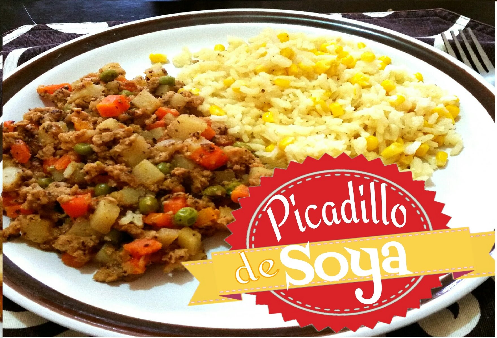

Picadillo de Soya
5 de agosto del 2017
Ingredientes:
(4 porciones)
- Aceite de olivo o canola
- 260 gr. de soya deshidratada
- Ajo en polvo
- Orégano en polvo
- 200gr. de papa picada en cubos
- 1 lata pequeña de chicharos
- 4 zanahorias picadas en cubos
- 500 ml de jugo de tomate
Procedimiento:
- Hidrata la soya en una olla a la mitad de agua y hierve con una cucharadita de aceite para evitar que se pegue.
- Agrega al agua orégano y mezcla para adherir el sabor.
- No dejes de revolver, luego de que salga un poco de espuma deja cocer 5 minutos y retira del fuego.
- En una cacerola agrega un poco de aceite, suficiente para cubrir solamente el fondo.
- Añade poco a poco la soya ya hidratada y el ajo y mezcla hasta que la soya adquiera color café.
- Agrega los chícharos y las papas y zanahoria picadas en cubos.
- Añade el jugo de tomate y deja hervir durante 10 minutos y retira del fuego.
No olvides que las grasas saturadas se encuentran en la mayoría de productos de origen animal.
Todo exceso es malo y compromete tu salud, por ello necesitas tener un estilo de vida saludable que incluya una dieta balanceada. No se trata de restringir alimentos, sino de saber prepararlos y consumirlos con moderación. ¿Te animarías a unirte a “Lunes sin carne”?
 Dany Zx: Excelente aporte, gracias.
Dany Zx: Excelente aporte, gracias.
Ceviche de Soya
8 de octubre del 2016

Ingredientes:
- 3 tazas de soya texturizada
- 2-3 jitomates grandes
- 1 Puño de cilantro picado
- 1 trozo de cebolla morada
- 1 pepino grande
- Chile serrano o jalapeño al gusto
- 6 Limones
- Sal y Pimienta para sazonar
Nota: En esta receta los ingredientes no son exactos, los vas calculando conforme vallas preparando el ceviche. La cantidad de jugo de limón es dependiendo de tu gusto.
Procedimiento:
- Pon a hidratar la soya en agua caliente, la suficiente como para que la tape. La dejas remojando por unos minutos hasta que se ponga suave. (Si compras las soya suelta te recomiendo que la enjuagues primero varias veces en agua fría).
- Mientras se está hidratando la soya, pica todos los vegetales.
- Cuando la soya ya esté suave, escúrrela muy bien y déjala enfríar para poderle poner los vegetales.
- Agrega los vegetales y el suficiente jugo de limón, de manera que se haga como ceviche. Sazona con sal y pimienta.
- Guarda el ceviche en el refrigerador por lo menos 30 minutos antes de servir, para que se maximicen los sabores.
- Sírvelos con tostadas o galletas.
¿A poco no se te antoja? A mi me encanta en tostadas… y si tienes unas rebanadas de aguacate mucho mejor… solo que ésta vez yo no tenía =(
Lizz Rivera: Buena receta,se ve muy buena, gracias.